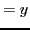

Next: Examining a function for Up: Maxima, minima and inflection Previous: Tests for determining when Contents Index
A maximum value of a function is one that is greater than any values immediately preceding or following. A minimum value of a function is one that is less than any values immediately preceding or following.
For example, in Figure 8.7, it is clear that the
function has a maximum value () when  , and a
minimum value () when
, and a
minimum value () when  .
.
The student should observe that a maximum value is not
necessarily the greatest possible value of a function nor a
minimum value the least. For in Figure 8.7 it is seen that
the function () has values to the right of  that are
greater than the maximum
that are
greater than the maximum  , and values to the left of
, and values to the left of  that
are less than the minimum
that
are less than the minimum  .
.
A function may have several maximum and minimum values. Suppose
that Figure 8.8 represents the graph of a function  .
.
At B, F the function is at a local maximum, and at D, G a minimum. That some particular minimum value of a function may be greater than some particular maximum value is shown in the figure, the minimum value at D being greater than the maximum value at G.
At the ordinary critical points D, F, H the tangent (or curve) is parallel to the  -axis;
therefore
-axis;
therefore

One of these two conditions is then necessary in order that the function shall have a maximum or a minimum value. But such a condition is not sufficient; for at H the slope is zero and at A it is infinite, and yet the function has neither a maximum nor a minimum value at either point. It is necessary for us to know, in addition, how the function behaves in the neighborhood of each point. Thus at the points of maximum value, B, F, the function changes from an increasing to a decreasing function, and at the points of minimum value, D, G, the function changes from a decreasing to an increasing function. It therefore follows from §8.3 that at maximum points
At such points as A and H where the slope is zero or infinite, but which are neither maximum nor minimum points,
The values of the variable at the turning points of a function
are called critical values; thus  and
and  are the
critical values of the variable for the function whose
graph is shown in Figure 8.7. The critical values at turning points where the
tangent is parallel to the
are the
critical values of the variable for the function whose
graph is shown in Figure 8.7. The critical values at turning points where the
tangent is parallel to the  -axis are evidently found by
placing the first derivative equal to zero and solving
for real values of
-axis are evidently found by
placing the first derivative equal to zero and solving
for real values of  , just as under §6.1.
(Similarly, if we wish to examine a function at exceptional
turning points where the tangent is perpendicular to the
, just as under §6.1.
(Similarly, if we wish to examine a function at exceptional
turning points where the tangent is perpendicular to the  -axis,
we set the reciprocal of the first derivative equal to
zero and solve to find critical values.)
-axis,
we set the reciprocal of the first derivative equal to
zero and solve to find critical values.)
To determine the sign of the first derivative at points near
a particular turning point, substitute in it, first, a value
of the variable just a little less than the corresponding critical
value, and then one a little greater8.5.
If the first gives (as at L, Figure 8.8)
and the second - (as at M), then the function () has a maximum value
in that interval (as at I).
If the first gives  (as at P) and the second (as at N), then
the function () has a minimum value in that interval (as at C).
(as at P) and the second (as at N), then
the function () has a minimum value in that interval (as at C).
If the sign is the same in both cases (as at Q and R), then the function () has neither a maximum nor a minimum value in that interval (as at F)8.6.
We shall now summarize our results into a compact working rule.